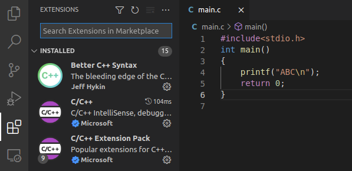
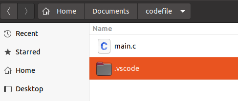

[toc]
VScode
*shortcus
cursor
| home | line beginning |
|---|---|
| end | line ending |
| ctrl+home | document beginning |
| ctrl+end | document ending |
| ctrl+shift+\ | jump between curly braces {} |
edit
| F2 | batch modify variable |
|---|---|
others
| ctrl+p | jump to another document |
|---|---|
| ctrl+g | jump to another line |
* extensions
C/C++
material theme
CodeSpell Checker
Bracket pair Colorizer
rainbow-highlighter
shift+alt+Z
shift+alt+A
* default space
The number of default space is two, sometimes we want change it to four.

"File" --> "Preferences" --> "Settings" -->search for "editor.detectIndentation" , uncheck.
* Chinese shows messy code

"File" --> "Preferences" --> "Settings" -->search for "files.autoGuessEncoding" , check.
* Font setting
"File" --> "Preferences" --> "Settings" -->search for "edit.font family" , put in "Noto Sans Mono CJK SC,monospace".
* show the C++ putout to terminal
(1) installing extentions

(2) new a file named "main.c"
(3)typing the F5 choose "C++(GDB/LLDB)", it'll generate a file named "launch.json", rewrite the file with following code:
{
// Use IntelliSense to learn about possible attributes.
// Hover to view descriptions of existing attributes.
// For more information, visit: https://go.microsoft.com/fwlink/?linkid=830387
"version": "0.2.0",
"configurations": [
{
"name": "(gdb) Launch",
"type": "cppdbg",
"request": "launch",
"program": "${workspaceFolder}/${fileBasenameNoExtension}.out",
"args": [],
"stopAtEntry": false,
"cwd": "${workspaceFolder}",
"environment": [],
"externalConsole": false,
"MIMode": "gdb",
"preLaunchTask": "build",
"setupCommands": [
{
"description": "Enable pretty-printing for gdb",
"text": "-enable-pretty-printing",
"ignoreFailures": true
}
]
}
]
}
(4)in the same folder named ".vscode", new a file named "tasks.json" and type following code in it :
{
// See https://go.microsoft.com/fwlink/?LinkId=733558
// for the documentation about the tasks.json format
"version": "2.0.0",
"tasks": [
{
"label": "build",
"type": "shell",
"command": "g++",
"args": ["-g", "${file}", "-std=c++11", "-o", "${fileBasenameNoExtension}.out"]
}
]
}
now, the relative files catalog is like this:


*watch every element of an array when debugging
add an array to "watch", and add a prefix "(type()[number])" to the array name:
C++
rand()
#include<stdlib.h>
#include<time.h>
time_t time(time_t *t);
srand((unsigned)time(NULL)); //use time as a seed
char pattern[20];
for (int i = 0; i < sizeof(pattern); i++)
pattern[i] = (97 + rand() % 4); //assign each element of the array as a or b or c or d
sleep()
Linux:
#include<unistd.h>
sleep(1); //delay for one seconds
windows:
#include<iostream>
using namespace std;
_sleep(1000);//delay for one seconds